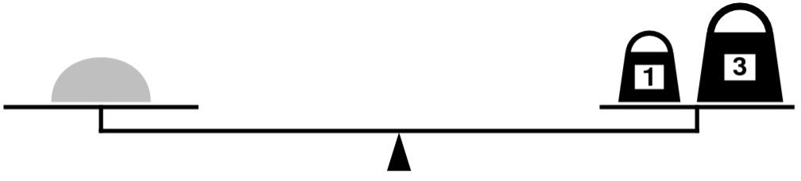
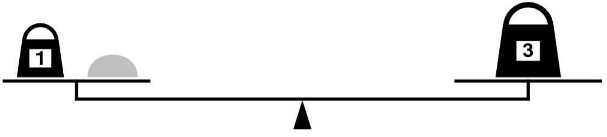

This week’s section exercises explore the ins and outs of content from weeks 4 and 5, focusing on delving more deeply into recursive backtracking and its applications, plus a bit of Big-O!
Each week, we will also be releasing a Qt Creator project containing starter code and testing infrastructure for that week's section problems. When a problem name is followed by the name of a .cpp file, that means you can practice writing the code for that problem in the named file of the Qt Creator project. Here is the zip of the section starter code:
1) Weights and Balances
Thank you to Eric Roberts for this problem
Topics: Recursion, Combinations, Backtracking
I am the only child of parents who weighed, measured, and priced everything; for whom what could not be weighed, measured, and priced had no existence.
—Charles Dickens, Little Dorrit, 1857In Dickens’s time, merchants measured many commodities using weights and a two-pan balance – a practice that continues in many parts of the world today. If you are using a limited set of weights, however, you can only measure certain quantities accurately.
For example, suppose that you have only two weights: a 1-ounce weight and a 3-ounce weight. With these you can easily measure out 4 ounces, as shown:

It’s more interesting to discover that you can also measure out 2 ounces by shifting the 1-ounce weight to the other side, as follows:

Write a recursive function,
bool isMeasurable(int target, const Vector<int>& weights);
that determines whether it is possible to measure out the desired target amount with a given set of weights, which is stored in the vector weights.
As an example, the function call
isMeasurable(2, { 1, 3 })
should return true because it is possible to measure out two ounces using the sample weight set as illustrated in the preceding diagram. On the other hand, calling
isMeasurable(5, { 1, 3 })
should return false because it is impossible to use the 1- and 3-ounce weights to add up to 5 ounces. However, the call
isMeasurable(6, { 1, 3, 7 })
should return true: you can measure the six-ounce weight by placing it and the one-ounce weight on one side of the scale and the seven-ounce weight on the other.
Here’s a function question to ponder: let’s say that you get to choose n weights. Which ones would you pick to give yourself the best range of weights that you’d be capable of measuring?
Imagine that we start off by putting the amount to be measured (call it n) on the left side of the balance. This makes the imbalance on the scale equal to n. Imagine that there is some way to measure n. If we put the weights on the scale one at a time, we can look at where we put that first weight (let’s suppose it weighs w). It must either:
- go on the left side, making the net imbalance on the scale n + w, or
- go on the right side, making the net imbalance on the scale n – w, or
- not get used at all, leaving the net imbalance n.
If it is indeed truly possible to measure n, then one of these three options has to be the way to do it, even if we don’t know which one it is. The question we then have to ask is whether it’s then possible to measure the new net imbalance using the weights that remain – which we can determine recursively! On the other hand, if it’s not possible to measure n, then no matter which option we choose, we’ll find that there’s no way to use the remaining weights to make everything balanced!
If we’re proceeding recursively, which we are here, we need to think about our base case. There are many options we can choose from. One simple one is the following: imagine that we don’t have any weights at all, that we’re asked to see whether some weight is measurable using no weights. In what circumstances can we do that? Well, if what we’re weighing has a nonzero weight, we can’t possibly measure it – placing it on the scale will tip it to some side, but that doesn’t tell us how much it weighs. On the other hand, if what we’re weighing is completely weightless, then putting it on the scale won’t cause it to tip, convincing us that, indeed, it is weightless! So as our base case, we’ll say that when we’re down to no remaining weights, we can measure n precisely if n = 0. With that in mind, here’s our code:
/**
* Given an amount, a list of weights, and an index, determines whether it's
* possible to measure n using the weights at or after the index given by
* startPoint.
*
* @param amount The amount to measure, which can be positive, negative or 0.
* @param weights The weights available to us.
* @param index The starting index into the weights Vector.
* @return Whether the amount can be measured using the weights from the specified
* index and forward.
*/
bool isMeasurableRec(int amount, const Vector<int>& weights, int index) {
if (index == weights.size()) {
return amount == 0;
} else {
return isMeasurableRec(amount, weights, index + 1) ||
isMeasurableRec(amount + weights[index], weights, index + 1) ||
isMeasurableRec(amount - weights[index], weights, index + 1);
}
}
bool isMeasurable(int amount, const Vector<int>& weights) {
return isMeasurableRec(n, weights, 0);
}
2) CHeMoWIZrDy
Topics: Recursion, Backtracking, Sets
Some words in the English language can be spelled out using just element symbols from the Periodic Table. For example, “began” can be spelled out as BeGaN (beryllium, gallium, nitrogen), and “feline” can be spelled out as FeLiNe (iron, lithium, neon). Not all words have this property, though; the word “interesting” cannot be made out of element letters, nor can the word “chemistry” (though, interestingly, the word “physics” can be made as PHYSICS (phosphorous, hydrogen, yttrium, sulfur, iodine, carbon, sulfur).
Write a function
bool isElementSpellable(const string& text, const Set<string>& symbols);
that accepts as input a string and a Set<string> containing all element symbols (stored with the proper capitalization), then returns whether that string can be written using only element symbols. Once you’ve gotten that function working, modify the function so that it has this signature:
bool isElementSpellable(const string& text, const Set<string>& symbols, string& result);
This function should behave as before, except that if it turns out that it is possible to spell the input string just using element symbols, the variable result is overwritten with one possible way of doing so.
Here’s a final variation to consider, which is much more challenging than the previous one but would be a great way to practice your recursive problem-solving. (As in, do this problem only if you have a good amount of time; it’s challenging!) As mentioned above, not all strings can be written using element symbols. The title of this problem is supposed to be “Chemowizardry,” but that just isn’t quite spellable using element symbols, so we compromised on “Chemowizrdy,” cutting out two letters. Write a function:
string closestApproximationTo(const string& text, const Set<string>& symbols);
that takes as input a string, then returns the longest subsequence of the input string that can be spelled out using element symbols, capitalized appropriately. For example, given the input “Chemowizardry,” the function should return “CheMoWIZrDy.”
Here’s one possible implementation of the isElementSpellable function:
/**
* Given a word and an element symbol, returns whether the word starts with that
* particular element symbol.
*
* @param word The word in question
* @param symbol The symbol in question.
* @return Whether the word starts with that element symbol.
*/
bool startsWithElement(const string& word, const string& symbol) {
return startsWith(toLowerCase(word), toLowerCase(symbol));
}
/**
* Given a word and a set containing all the element symbols in the Periodic
* Table, returns whether it’s possible to spell that word using just element
* symbols.
*
* @param text The word
* @param symbols The element symbols in the Periodic Table.
* @return Whether that text can be spelled out.
*/
bool isElementSpellable(const string& word, const Set<string>& symbols) {
/* Base case: the empty string can be spelled out by simply using no strings
* from the list of symbols.
*/
if (word == "") {
return true;
}
/* Recursive case: try each element symbol to see whether any of them match
* the first characters of the input string. We could alternatively rely on
* the fact that all element symbols are between 1 and 3 characters long, but
* just in case that changes we won't assume that here. :-)
*/
else {
for (string symbol: symbols) {
if (startsWithElement(word, symbol) &&
isElementSpellable(word.substr(symbol.length()), symbols)) {
return true;
}
}
/* If none of those options work, there is no way to spell this word using
* element symbols.
*/
return false;
}
}
We can modify this code to report the way in which the string would match by making a slight modification to the recursive step to accumulate element symbols together as we unwind back up.
bool isElementSpellable(const string& word, const Set<string>& symbols,
string& result) {
/* Base case: the empty string can be spelled out by simply using no strings
* from the list of symbols.
*/
if (word == "") {
result = ""; // This is the proper way to spell this word.
return true;
}
/* Recursive case: try each element symbol to see whether any of them match
* the first characters of the input string. We could alternatively rely on
* the fact that all element symbols are between 1 and 3 characters long, but
* just in case that changes we won't assume that here. :-)
*/
else {
for (string symbol: symbols) {
if (startsWithElement(word, symbol)) {
/* See if we can spell what's left. */
if (isElementSpellable(word.substr(symbol.length()),
symbols, result)) {
/* Because we could, we know that result is now filled in with
* how to spell the rest of the word (that's what the function
* says it will do!). We just need to prepend the element
* symbol we used.
*/
result = symbol + result;
return true;
}
}
}
/* If none of those options work, there is no way to spell this word using
* element symbols.
*/
return false;
}
}
Now, to the challenge problem of getting the best optimization. This one is a lot harder because we might not end up using all the letters in the original string – in fact, we might delete large chunks of the string in order to make more things fit.
We could do this by going one character at a time, seeing what to do with that character, but that turns out to be fairly tricky. Instead, we’ll opt for another approach. We’ll ask the question: which element symbol should go at the start of the approximation? For each possible element symbol, we need to check that the characters within that symbol actually appear somewhere in the input string. But the tricky bit is that they don’t have to be consecutive. For example, in converting “chemowizardry” to “CHeMoWIZrDy,” we deleted the a between the z and the r to make zirconium (Zr) fit, and we deleted the r between the d and y to get dysprosium (Dy) to fit. So when we try using an element symbol, we need to find all the characters that make it up, in sequence, possibly with spaces in them. That’s tricky but doable.
And what happens if no element symbol fits? Then we just end up approximating things with the empty string.
Here’s what this might look like:
string closestApproximationTo(const string& word, const Set<string>& symbols) {
/* Base case: If the string is empty, the best approximation is to use no
* element symbols.
*/
if (word == "") return "";
/* Recursive case: Try all possible elements to see which one goes first. */
string best = ""; // In case nothing matches, we return the empty string.
for (string element: symbols) {
/* See where this element fits. We need to find each character in sequence
* but possibly with gaps between them.
*/
element = toLowerCase(element);
int index = toLowerCase(word).find(element[0]);
for (int i = 1; i < element.length() && index != string::npos; i++) {
index = toLowerCase(word).find(element[i], index + 1);
}
/* If we found everything, this is a possible match. */
if (index != string::npos) {
auto with = element + closestApproximationTo(word.substr(index + 1),
symbols);
if (best.length() < with.length()) best = with;
}
}
return best;
}
3) Barnstorming Brainstorming
Topics: Recursion, Backtracking, Permutations
You’re campaigning for office and it’s down to the very last week before the election. A last-minute tour of swing states/districts/areas can have a huge impact on your final vote totals, so you decide to see whether it’s possible to visit all of them in a short amount of time. As as simplifying assumption for this problem, let’s assume that each of your campaign stops is represented as a GPoint, which represents a point in space. You can access the x and y coordinates of a GPoint, which are doubles, by using the syntax pt.x() and pt.y(). Further, let’s assume the travel time between two points is equal to their Euclidean (straight line) distance. Write a function
bool canVisitAllSites(const Vector<GPoint>& sites, double travelTimeAvailable);
that takes as input a list of all the sites you’d like to visit and an amount of free time available to you and returns whether it’s possible to visit all those sites in the allotted time (assume you’ve already factored in the cost of speaking at each site and that you’re just concerned about the travel time.) You can start wherever you’d like. Once you’ve gotten that working, update your function so that it has this signature:
bool canVisitAllSites(const Vector<GPoint>& sites, double travelTimeAvailable, Vector<GPoint>& result);
This function works as before, except that if it’s possible to visit all the sites, it fills in the parameter result with the list of the cities in the order you should visit them. Then think about whether memoization would be appropriate here and, if so, update your code to use it.
This problem essentially boils down to generating all permutations of the sites and seeing whether any of them fit in the specified timeframe. The intuition we’ll use in writing up this solution is similar to the one we used to generate permutations in class – we’ll look at all options for the next place to go, consider what would happen if we visited any of them, and see if any of those options lead to success. One catch here is that in order to measure distances we need to remember where we just were, since we have to measure distances based on where we used to be. That in itself is somewhat interesting because the very first place we visit isn’t proceeded by anything, so we’ll separate that from the rest of the recursion logic.
Here’s what that looks like:
/**
* Given a list of sites to visit and a total travel time, plus the location of
* the last city visited, returns whether it's possible to visit all of those
* locations in the specified amount of time.
*
* @param sites The list of sites left to visit.
* @param timeAvailable How much time is left.
* @param last The last place we visited.
* @return Whether we can visit those sites starting at the given location.
*/
bool canVisitAllSitesRec(const Vector<GPoint>& sites, double timeAvailable,
const GPoint& last);
/**
* Given a Vector, returns a new Vector formed by removing the element at the
* specified index.
*
* @param sites The list of sites.
* @param index The index in question.
* @return That vector with that index removed.
*/
Vector<GPoint> removeAt(Vector<GPoint> sites, int index);
bool canVisitAllSites(const Vector<GPoint>& sites, double timeAvailable) {
/* If there aren't any sites, we can always visit them all! */
if (sites.isEmpty()) return true;
/* Try all possible starting points and see if any of them work. */
for (int i = 0; i < sites.size(); i++) {
if (canVisitAllSitesRec(removeAt(sites, i), timeAvailable, sites[i])) {
return true;
}
}
return false;
}
/**
* Returns the Euclidean distance between two points.
*
* @param one The first point.
* @param two The second point.
* @return The distance between them.
*/
double distanceBetween(const GPoint& one, const GPoint& two) {
double dx = one.x() - two.x();
double dy = one.y() - two.y();
return sqrt(dx * dx + dy * dy);
}
bool canVisitAllSitesRec(const Vector<GPoint>& sites, double timeAvailable,
const GPoint& last) {
/* Base case: If no sites remain, we're done! */
if (sites.isEmpty()) {
return true;
}
/* Recursive case: see where we go next. */
else {
for (int i = 0; i < sites.size(); i++) {
/* See how long this is going to take. If it's too far, then we
* can't go there next.
*
* We can actually be way more aggressive here due to the triangle
* inequality: the fastest way to a point is to go straight there.
* If we can't make it there from here in time, there's no alternate
* route we could take that would be any better. The only reason we
* didn't optimize the code this way was because in general you can't
* make assumptions like this.
*/
double distance = distanceBetween(last, sites[i]);
if (distance <= timeAvailable &&
canVisitAllSitesRec(removeAt(sites, i), timeAvailable - dist,
sites[i])) {
return true;
}
}
/* Looks like no options worked. Oh well! */
return false;
}
}
To update this code to not just tell us whether there is a route, but to also say what the route is, we can update the function so that, when it finds a route that works, it adds in the city that we considered at the current level of the recursion. Here’s what that looks like, with the helper functions and documentation removed:
bool canVisitAllSites(const Vector<GPoint>& sites, double timeAvailable,
Vector<GPoint>& result) {
/* If there aren't any sites, we can always visit them all! */
if (sites.isEmpty()) {
result.clear(); // Best option is the empty list.
return true;
}
/* Try all possible starting points and see if any of them work. */
for (int i = 0; i < sites.size(); i++) {
if (canVisitAllSitesRec(removeAt(sites, i), timeAvailable, sites[i],
result) {
/* Prepend the starting city. */
result.insert(0, sites[i]);
return true;
}
}
return false;
}
bool canVisitAllSitesRec(const Vector<GPoint>& sites, double timeAvailable,
const GPoint& last, Vector<GPoint>& result) {
/* Base case: If no sites remain, we're done! */
if (sites.isEmpty()) {
result.clear(); // Empty list is the correct visit order here.
return true;
}
/* Recursive case: see where we go next. */
else {
for (int i = 0; i < sites.size(); i++) {
double distance = distanceBetween(last, sites[i]);
if (distance <= timeAvailable &&
canVisitAllSitesRec(removeAt(sites, i), timeAvailable – dist,
sites[i], result)) {
/* Result will have been filled in with the best sequence to use
* given the remaining cities, so we just need to fill in this
* particular city.
*/
result.insert(0, sites[i]);
return true;
}
}
/* Looks like no options worked. Oh well! */
return false;
}
}
This function would not be a good candidate for memoization. It’s extremely unlikely that we’d arrive at the same recursive call in two different ways, since that would mean that somehow we visited the same set of cities in two different ways and ended up using exactly the same amount of time to do so.
4) Pattern Matching
Topics: Recursion, Backtracking, Strings
One of the concepts you’ll probably run into if you continue on as a programmer (or take CS103!) is the regular expression, a way of representing a pattern to match as a string. Regular expressions make it easy to write code to search for complicated patterns in text and break them apart, and a lot of our starter files include them to parse test case files. This problem addresses a simplified version of regular expression matching.
Let’s imagine that you have a pattern string that consists of letters, plus the special characters star (*), dot (.), and question-mark (?). The star symbol means “any string of zero or more characters,” the dot means “any individual character,” and the question-mark means “nothing, or any character.” Here are some examples:
- The pattern
a*means “match the letter a, then match any number of characters,” so it essentially means “match anything beginning with an a.” As a result,a*would match apple, apply, and apoplexy, but not Amicus (it’s case-sensitive), banana (contains an a, but doesn’t start with one), or moose (which isn’t even close). - The pattern
*a*means “match any number of characters, then an a, then any number of characters,” so it essentially means “match any string containing an a.” Therefore, the pattern*a*would match ramadan, diwali, shavuot, and advent but not the strings eid, sukkot, lent, or holi. - The pattern
th...means “match th, then math any three characters,” so it matches five-letter words starting with th. For example, this would match there and third, but not the or other. - The pattern
colo?rmeans “match colo, then optionally match another character, then match r,” so it would match color and colour (as well as coloxr), but not colors or colours.
Your task is to write a function
bool matches(const string& text, const string& pattern);
that takes as input a string and a pattern, then returns whether that string matches the pattern.
Once you’re done, ask yourself whether memoization would make this function any faster, and, if so, update this function to use memoization.
The recursion here works by recursively consuming both the pattern and the text, but its base case is only for the case where the pattern is empty, since an empty pattern only matches the empty string while an empty string can match a nonempty pattern. (Do you see why?) The solution we’ve introduced here uses a quick optimization that’s worth keeping in your back pocket. Because we always munch from the front of the pattern and text strings, any text or pattern string we encounter later on is going to be a suffix of the original text or pattern. Therefore, rather than making lots of copies of strings by using string::substr, we’ll just keep track of the index of the next character in each string that we need to process.
bool matchesRec(const string& text, int textIndex,
const string& pattern, int patternIndex) {
/* Base case: If we've consumed the pattern, confirm we consumed the text. */
if (patternIndex == pattern.length()) {
return textIndex == text.length();
}
/* Recursive step: there's more pattern to match. See what to do here. */
/* Case 1: The next pattern character is a letter. */
else if (isalpha(pattern[patternIndex])) {
return textIndex != text.length() && // Text isn't empty
text[textIndex] == pattern[patternIndex] && // That char matches
matchesRec(text, textIndex + 1, pattern, patternIndex + 1);
}
/* Case 2: The next pattern character is a dot. */
else if (pattern[patternIndex] == '.') {
return textIndex != text.length() &&
matchesRec(text, textIndex + 1, pattern, patternIndex + 1);
}
/* Case 3: The next pattern character is a ?. */
else if (pattern[patternIndex] == '?') {
return matchesRec(text, textIndex, pattern, patternIndex + 1) ||
(textIndex != text.length() &&
matchesRec(text, textIndex + 1, pattern, patternIndex + 1));
}
/* Case 4: The next pattern character is a star. */
else if (pattern[patternIndex] == '*') {
return matchesRec(text, textIndex, pattern, patternIndex + 1) ||
(textIndex != text.length() &&
matchesRec(text, textIndex + 1, pattern, patternIndex));
} else {
error("Unknown pattern character.");
}
}
bool matches(const string& text, const string& pattern) {
return matchesRec(text, 0, pattern, 0);
}
This function is very amenable to memoization, especially given that texts with multiple stars or question marks in them can possibly match the same text in several different ways.
We’re going to use the handy SparseGrid type for our memoization. It’s essentially a 2D grid that may have missing entries, which is perfect for memoization where our table is initially empty and then has entries filled in as the recursion progresses.
bool matchesRec(const string& text, int textIndex,
const string& pattern, int patternIndex,
SparseGrid<bool>& memo) {
/* Base case: If we've consumed the pattern, confirm we consumed the text. */
if (patternIndex == pattern.length()) {
return textIndex == text.length();
}
/* Base case: If we've memoized the result, return it. */
else if (memo.isSet(textIndex, patternIndex)) {
return memo[textIndex][patternIndex];
}
/* Recursive step always has to write the answer down. We'll store that value
* in a variable that we write at the very end of the function.
*/
bool answer;
/* Case 1: The next pattern character is a letter. */
else if (isalpha(pattern[patternIndex])) {
answer = textIndex != text.length() &&
text[textIndex] == pattern[patternIndex] &&
matchesRec(text, textIndex + 1, pattern, patternIndex + 1, memo);
}
/* Case 2: The next pattern character is a dot. */
else if (pattern[patternIndex] == '.') {
answer = textIndex != text.length() &&
matchesRec(text, textIndex + 1, pattern, patternIndex + 1, memo);
}
/* Case 3: The next pattern character is a ?. */
else if (pattern[patternIndex] == '?') {
answer = matchesRec(text, textIndex, pattern, patternIndex + 1, memo) ||
(textIndex != text.length() &&
matchesRec(text, textIndex + 1, pattern, patternIndex + 1, memo));
}
/* Case 4: The next pattern character is a star. */
else if (pattern[patternIndex] == '*') {
answer = matchesRec(text, textIndex, pattern, patternIndex + 1, memo) ||
(textIndex != text.length() &&
matchesRec(text, textIndex + 1, pattern, patternIndex, memo));
} else {
error("Unknown pattern character.");
}
memo[textIndex][patternIndex] = answer;
return answer;
}
bool matches(const string& text, const string& pattern) {
SparseGrid<bool> memo(text.length() + 1, pattern.length() + 1);
return matchesRec(text, 0, pattern, 0, memo);
}
5) Advocating for Exponents
Topics: Big-O (and a lil' recursion)
Below is a simple function that computes the value of mn when n is a nonnegative integer:
int raiseToPower(int m, int n) {
int result = 1;
for (int i = 0; i < n; i++) {
result *= m;
}
return result;
}
- What is the big-O complexity of the above function, written in terms of m and n? You can assume that it takes time O(1) to multiply two numbers.
- ii. If it takes 1μs to compute
raiseToPower(100, 100), approximately how long will it take to computeraiseToPower(200, 10000)?
Below is a recursive function that computes the value of mn when n is a nonnegative integer:
int raiseToPower(int m, int n) {
if (n == 0) return 1;
return m * raiseToPower(m, n - 1);
}
-
What is the big-O complexity of the above function, written in terms of m and n? You can assume that it takes time O(1) to multiply two numbers.
-
If it takes 1μs to compute
raiseToPower(100, 100), approximately how long will it take to computeraiseToPower(200, 10000)?
Based on this observation, we can write this recursive function:
int raiseToPower(int m, int n) {
if (n == 0) {
return 1;
} else if (n % 2 == 0) {
int halfPower = raiseToPower(m, n / 2);
return halfPower * halfPower;
} else {
int halfPower = raiseToPower(m, n / 2);
return m * halfPower * halfPower;
}
}
-
What is the big-O complexity of the above function, written in terms of m and n? You can assume that it takes time O(1) to multiply two numbers.
-
If it takes 1μs to compute
raiseToPower(100, 100), approximately how long will it take to computeraiseToPower(200, 10000)?
int raiseToPower(int m, int n) {
int result = 1;
for (int i = 0; i < n; i++) {
result *= m;
}
return result;
}
- What is the big-O complexity of the above function, written in terms of m and n? You can assume that it takes time O(1) to multiply two numbers.
This function runs in time O(n). It runs the loop n times, at each step doing O(1) work. There is no dependence on m in the runtime.
- ii. If it takes 1μs to compute
raiseToPower(100, 100), approximately how long will it take to computeraiseToPower(200, 10000)?
We know that this code runs in time O(n), so it scales roughly linearly with the size of n. Therefore, if it took 1μs to compute a value when n = 100, it will take roughly 100 times longer when we plug in n = 10000. As a result, we’d expect this code would take about 100μs to complete.
int raiseToPower(int m, int n) {
if (n == 0) return 1;
return m * raiseToPower(m, n – 1);
}
- What is the big-O complexity of the above function, written in terms of m and n? You can assume that it takes time O(1) to multiply two numbers.
If we trace through the recursion, we’ll see that we make a total of n recursive calls, each of which is only doing O(1) work. Adding up all the work done by these recursive calls gives us a total of O(n) work, as before.
- If it takes 1μs to compute
raiseToPower(100, 100), approximately how long will it take to computeraiseToPower(200, 10000)?
As before, this should take about 100μs.
int raiseToPower(int m, int n) {
if (n == 0) {
return 1;
} else if (n % 2 == 0) {
int halfPower = raiseToPower(m, n / 2);
return halfPower * halfPower;
} else {
int halfPower = raiseToPower(m, n / 2);
return m * halfPower * halfPower;
}
}
- What is the big-O complexity of the above function, written in terms of m and n? You can assume that it takes time O(1) to multiply two numbers.
Notice that each recursive call does O(1) work (there are no loops anywhere here), then calls itself on a problem that’s half as big as the original one. This means that only O(log n) recursive calls will happen (remember that repeatedly dividing by two is the hallmark of a logarithm), so the total work done here is O(log n).
- If it takes 1μs to compute
raiseToPower(100, 100), approximately how long will it take to computeraiseToPower(200, 10000)?
We know that the runtime when n = 100 is roughly 1μs. Notice that 1002 = 10,000, so we’re essentially asking for the runtime of this function when we square the size of the input. Also notice that via properties of logarithms that log n2 = 2 log n. Therefore, since we know the runtime grows rough-ly logarithmically and we’ve squared the value of n, this should take about twice as long as before, roughly 2μs.
6) Revisiting Reversals
Topics: Recursion, Big-O
In one of our earlier lectures, we wrote this function to reverse a string:
string reverseOf(string str) {
if (str == "") {
return str;
} else {
return reverseOf(str.substr(1)) + str[0];
}
}
Let n be the length of the input string. What is the big-O complexity of the above function? You may find the following facts useful:
- The runtime of the string::substr function is O(k), where k is the length of the string returned.
- The runtime of concatenating two strings is O(k), where k is the length of the string returned.
- The runtime of comparing two strings is O(k), where k is the length of the shorter of the two strings being compared.
- The runtime of making a copy of a string is O(k), where k is the length of the string.
- The runtime of choosing a single character out of a string is O(1).
Now, let’s suppose you change that function so that it takes its argument by const reference, as shown here:
string reverseOf(const string& str) {
if (str == "") {
return str;
} else {
return reverseOf(str.substr(1)) + str[0];
}
}
Now, what’s the big-O time complexity of this function? Do you think it would be faster than before?
Here’s a completely different way of reversing a string:
string reverseOf(const string& str) {
if (str.length() <= 1) {
return str;
} else {
return reverseOf(str.substr(str.length() / 2)) +
reverseOf(str.substr(0, str.length() / 2));
}
}
Talk with your fellow sectionees about how this function works. What does it do? Why is it correct? Then, once you’ve got that sorted out, think about how efficient it is. What’s the big-O time complexity of this function, assuming that string::length runs in time O(1)?
string reverseOf(string str) {
if (str == "") {
return str;
} else {
return reverseOf(str.substr(1)) + str[0];
}
}
Notice that when we call this function with a string of length n, we do O(n) work inside the function. That comes from the cost of making the substring of length n-1, plus the work to concatenate the resulting string with str[0], plus the cost of initializing the argument of the function we called, which takes its argument by value. We then make a recursive call on a problem of size n-1. The net effect is that, like with insertion and selection sort, we’re roughly doing work
n + (n-1) + (n-2) + … + 2 + 1
which works out to O(n^2) work.
If we rewrite this code so that we have the argument passed in by const reference, then we still haven’t changed the fact that we’re doing O(n) work inside the body of the function call, so the overall runtime is still going to be O(n^2). However, we should expect it to run a bit faster, since we are reducing the total amount of work that we need to do. at each step.
string reverseOf(const string& str) {
if (str.length() <= 1) {
return str;
} else {
return reverseOf(str.substr(str.length() / 2)) +
reverseOf(str.substr(0, str.length() / 2));
}
}
Notice that any given function call to reverseOf will still do O(n) work on a string of length n, since we have to create the two substrings (total length n) and concatenate them together to form a longer string of length n. However, this code is different from the previous part in that there are two recursive calls, not one, and each one is to a subproblem whose size is roughly n/2.
But we’ve seen this before! This is just like mergesort, which does linear work at each call and makes two subcalls on problems of size n/2. That means that this runs in time O(n log n).